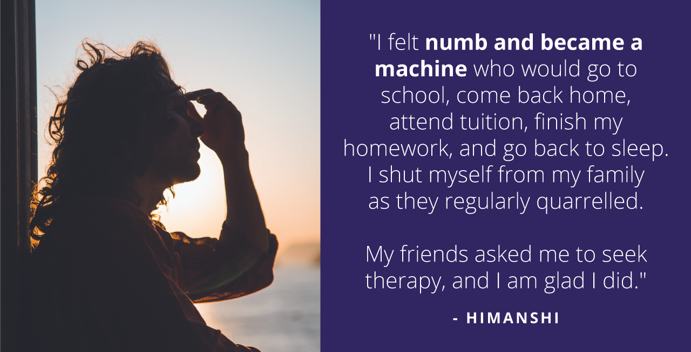

How Himanshi’s Opinion On Mental Health Changed As She Confidently Handled Her Toxic Relationships With The Help Of Counseling
Growing up in a challenging surroundings can alter a child’s behaviour pattern. For Himanshi, a 21-year-old student of Design from Jamshedpur, her childhood was a long haul. She grew up dealing with toxic relationships and the stressful emotions these put her through. She is from a Commerce background and is on her path to becoming a creative master of all trades. She identifies her leisure activities as Golf, Violin, illustrations, and drawing. Himanshi is a social butterfly and enjoys having heartfelt dialogues with people. The most common challenge teenagers face is establishing themselves on a successful career path. It was no different for Himanshi.
“I also fell prey to the pressure of the ’12th standard syndrome’ and the constant nudge to succeed in my career and choose a professional course around me.”
She wanted to choose her specialisation in either Economics or Marketing analytics but went after her calling to pursue Design.

Himanshi spoke of incidents around family violence that would leave her feeling stressed.
“It was a toxic household environment where my parents constantly fought. My dad was an alcoholic, and this spurred fights and arguments.”
It was around this time that Himanshi got involved in a romantic relationship with her then-partner.
In the beginning, it all seemed like reading a heartfelt happy ending like a Cinderella story until things became difficult.
Watching the two of the most significant facets of her life rust daily, she lost faith in these relationships. Himanshi also explains how social acceptance became a challenge as she had to move to a new school.
“My friends used to speak to me about the dynamism of mental health, setting boundaries, learning abuse and its kinds, and remember having healthy conversations around the notion.”
She also reminisces about how she understood what she was going through and why it was a problem.
“I was processing all the information and remembered having a panic attack. I shivered and had trouble breathing. It was my moment of truth, and I got in touch with YourDOST.
Himanshi describes her opinion on mental health before YourDOST as something she did not believe.
“I used to be sure that mental health was never true for me until my friends pushed me to seek therapy seeing me go through difficult emotions.”
She recounts instances where she feared letting go of things and people. She would react to even small things breaking from her table.
Himanshi explains how she reached out to YourDOST and got in touch with her counselor Isabella. It revolutionised her life.
“I am incredibly grateful to my counselor Isabella. She was always around to help me deal with my emotions. I felt satisfied and light-hearted when I spoke to her on an audio call.”
Some of the exercises and techniques Isabella suggested Himanshi do include penning down the things she felt she lacked. These were discussed in the next session.
Himanshi successfully followed these exercises. She was already on the path to identifying a new self.
“I felt light and as if the burden evaporated into thin air speaking to my counselor. My friends were perplexed with the person I became, especially watching me set boundaries and prioritise myself over everything.
As the saying goes, ‘Change doesn’t happen overnight’ acknowledging your mental struggles is the first step toward change.
Himanshi’s words of gratitude – “Isabella gave me space to vent and allowed me to stay vulnerable with her. It helped me gain trust in her, and she was non-judgemental like a human diary.”
Himanshi summarises her journey of improvement as an eye-opener to emotional wellness. She feels the best part of therapy was it helped her go through self-introspection.
Just like winters are cold and testing times of the year, it eventually turns into spring, bearing fruits and flowers and blessing us with hope and warmth. This has been the remarkable journey of our lioness Himanshi.
She feels that she is more mindful of her emotions. Himanshi salutes mental health service providers and shall strive to spread awareness to support people like her. She rated herself with a solid 4 on 5 in terms of her progress.
Himanshi’s Warrior Tips:
1. Understand that there is a problem, and only then will you be able to seek help.
2. Always remember to acknowledge your emotions and step forward to confidently seek the relevant assistance.
#LetsTalk